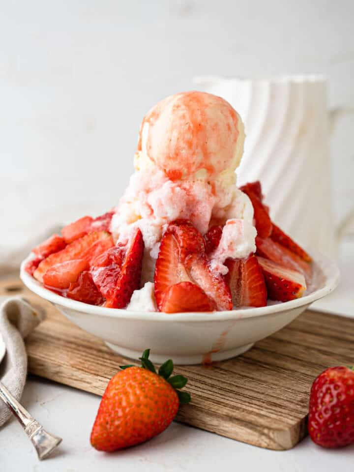

Strawberry Bingsu
Strawberry Bingsu Recipe

Recipes:
Bingsu
- 480ml Whole milk (2 cups)
- 60ml Sweetened condensed milk (¼ cup)
Strawberry Sauce:
- 170g Strawberries, roughly chopped (1 cup)
- 50g Granulated sugar (¼ cup)
Others:
- 6-8 Strawberries, halved
- 1 scoop Vanilla ice cream
Instructions
Bingsu
- Combine the whole milk and condensed milk in a medium-sized jug and mix until completely combined
- Pour the milk into an ice cube tray and place in the freezer for 4-6 hours, or until solid
Strawberry Sauce
- Combine the strawberries and sugar in a small saucepan over medium heat and cook for 4-5 minutes until thickened
- Cool completely
Assembly
- Once the bingsu cubes are solid place the frozen cubes in the bowl of a food processor and pulse until just broken up and fluffy
- Spoon the shaved ice into your serving bowl, drizzle with strawberry sauce and top with strawberries and vanilla ice cream.
- Enjoy immediately